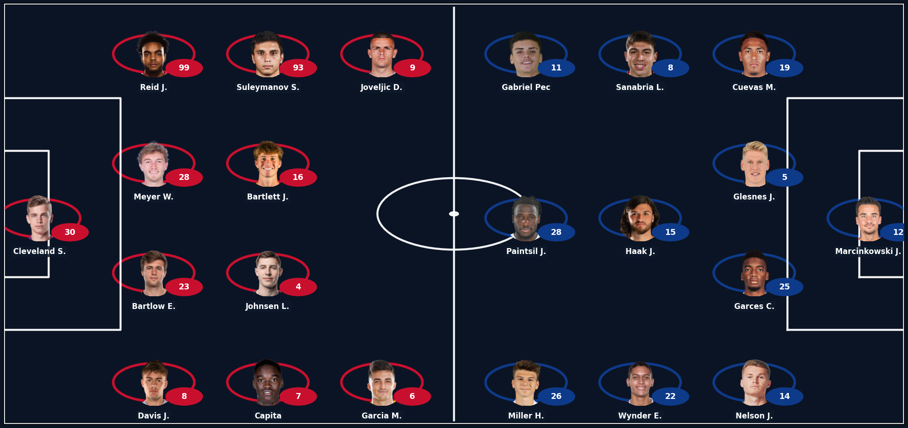
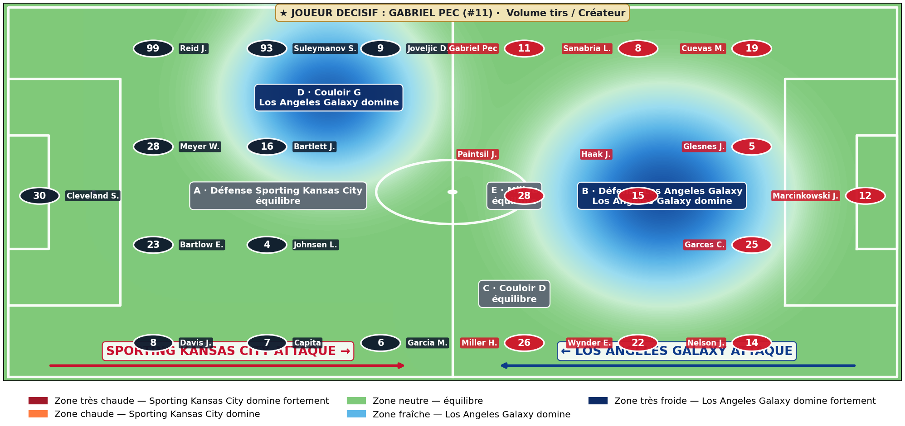

EQUIPE AGENT IA FOOT · ANALYSE MICRO FOTMOB · 5 ZONES TACTIQUES
Sporting Kansas City vs Los Angeles Galaxy
Rapport de force tactique sur le terrain
Zones maîtrisées · Sporting Kansas City 1 - 0 Los Angeles Galaxy (écart 1)
Source XI : Flashscore · Stats joueurs : FotMob (NEXT_DATA) · Heatmap : matplotlib gaussian smooth
01 Formation · Compositions probables Flashscore
Sporting Kansas City vs Los Angeles Galaxy

02 5 blocs tactiques · Lecture déséquilibre par zone
ROUGE = Sporting Kansas City domine la zone · BLEU = Los Angeles Galaxy domine la zone · Δ catégories gagnées par bloc

Convention : Sporting Kansas City attaque vers la droite. Numéros = joueurs. Heatmap = 5 zones tactiques (A/B = défense vs attaque, C/D = couloirs, E = milieu créateur).
03 Verdict pari 1X2
REMBOURSÉ SI NUL SPORTING KANSAS CITY (DNB)
Confiance : PRUDENTE
Zones maîtrisées : Sporting Kansas City 1 · Los Angeles Galaxy 0 · égalités 4
Modèle : note FotMob moyenne par joueur normalisée par baseline du rôle dans le match (1.0 = joueur moyen pour son poste)
04 Match ouvert ? (Over / Under)
Pari à cibler : Under 2.5 ou nul vierge · Confiance : à confirmer meso
1. Chaque équipe a au moins UN bloc fort (Δ ≥ 3 catégories)
Sporting Kansas City : 0 zone(s) · Los Angeles Galaxy : 0 zone(s)
✗
2. Chaque équipe a un attaquant à 2+ profils confluents
Sporting Kansas City max : 1 · Los Angeles Galaxy max : 3
✗
3. Les DEUX défenses cèdent (blocs A et B remportés par l'attaque)
Défense Sporting Kansas City cède : non · Défense Los Angeles Galaxy cède : non
✗
4. Aucune égalité dans les blocs (match disputé partout)
Au moins une égalité
✗
05 Les 5 zones de confrontation
A · Défense Sporting Kansas City
Défense de Sporting Kansas City contre l'attaque de Los Angeles Galaxy
0.98
indice qualité moyen
1.00
équilibre · équilibre (Δ -0.021)
B · Défense Los Angeles Galaxy
Défense de Los Angeles Galaxy contre l'attaque de Sporting Kansas City
1.00
indice qualité moyen
1.02
équilibre · équilibre (Δ -0.021)
C · Couloir droit
Couloir droit (binôme latéral + ailier)
1.00
indice qualité moyen
1.02
équilibre · équilibre (Δ -0.026)
D · Couloir gauche
Couloir gauche (binôme)
0.98
indice qualité moyen
1.02
équilibre · équilibre (Δ -0.036)
E · Milieu créateur
Milieu créateur central
1.03
indice qualité moyen
0.97
Sporting Kansas City domine · léger avantage (Δ +0.059)
06 Top 3 joueurs décisifs par équipe
Sporting Kansas City
Joueurs décisifs
#9 Joveljic D.
Attaquant gauche
Note 6.75 · 5B / 1P en 11 matchs
#6 Garcia M.
Attaquant droit
Note 6.89 · 0B / 1P en 11 matchs
Profil : Créateur
#4 Johnsen L.
Milieu droit
Note 6.74 · 1B / 0P en 8 matchs
Los Angeles Galaxy
Joueurs décisifs
#19 Cuevas M.
Défenseur droit
Note 7.62 · 4B / 2P en 6 matchs
Profil : Volume tirs · Créateur
#26 Miller H.
Attaquant gauche
Note 7.21 · 0B / 7P en 10 matchs
Profil : Passeur · Volume tirs · Créateur
#22 Wynder E.
Milieu gauche
Note 6.96 · 0B / 0P en 10 matchs
07 Méthode
Modèle 5 zones tactiques (agnostique de la formation)
S'adapte à toute formation (4-3-3, 4-2-3-1, 3-4-2-1, 3-5-2, 4-4-2…). Pour chaque zone, agrégation Σ stats + moyenne /90 sur les joueurs du groupe, comparaison domaine par domaine (Frappe / Passes / Possession / Défense / Discipline).
Source data
XI résolus via API Flashscore (hash dlie2) + matchDetails FotMob via faille __NEXT_DATA__. Cross-référence par numéro maillot + fuzzy nom. Stats joueurs : 70+ stats par joueur (xG, xA, tirs, tacles, interceptions, etc.).
Échelle de pari 1X2
5-0 : victoire écrasante · Δ ≥ 3 : victoire probable · Δ = 2 sans égalité : double chance · Δ = 1 : DNB · Δ = 0 : pas de pari.